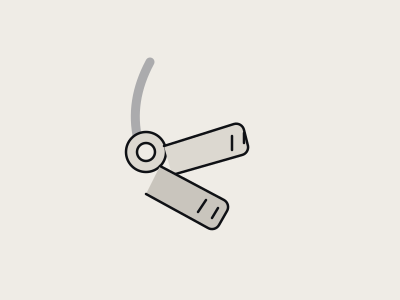

University property registry
Things go missing. People help.
One calm, privacy-aware place to search campus, report what disappeared, and return what you found.

0Active records
0In safe storage
0Returned
Choose a path
What happened?
Latest intake
Recently found
Loading recent records…